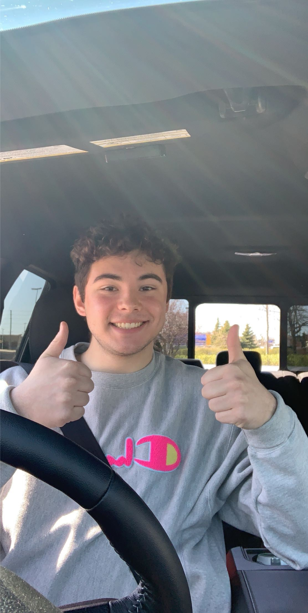

About Me
I am a student at Algonquin College in the IMD program. This is my 1st year at Algonquin College and so far I am loving it! I wasn't sure what I wanted to do after High School but after taking a few media-type programs, I realized that I wanted to do something in the Media Field. I found this program and thought it would be a perfect fit.
When I have time, I enjoy spending time at my cottage. I also enjoy water skiing and going for long walks with my dog in the woods. Being at my cottage and in nature forces me to slow down, calm down, and realx. I am at my best when I am there.
You Are Your Own Worst Enemy - Sue Lacosta